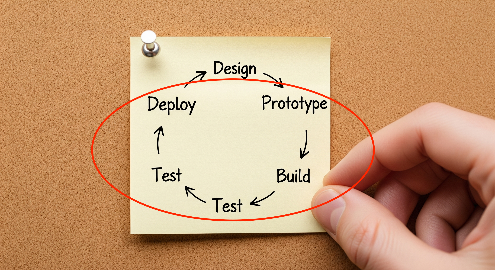

Proyecto final de DAW

Fechas clave
| Hito | Fecha |
|---|---|
| Entrega de la propuesta | 6 de marzo |
| Fin recomendado de desarrollo | Principios de mayo |
| Entrega final (Figma, repositorio, documentación, despliegue) | 29 de mayo |
| Defensa del proyecto | Principios de junio |
Se recomienda planificar para terminar el desarrollo a principios de mayo. El tiempo restante debe dedicarse a pulir el código, completar la documentación y preparar la defensa.
Seguimiento del proyecto
Seguimiento telemático semanal
El proyecto tendrá un seguimiento telemático semanal. Para ello es fundamental:
- Utilizar GitHub Projects (u otra herramienta de planificación aprobada).
- Aplicar SCRUM simplificado (sin reuniones en el caso individual).
- Tener tareas asignadas todas las semanas (más o menos complejas según la disponibilidad).
- Mantener el repositorio y la planificación actualizados.
Sprint Review (cada 2 semanas)
Cada dos semanas deberás realizar una Sprint Review virtual que consiste en:
-
Grabar un vídeo corto (máximo 5 minutos) mostrando:
- Avances realizados en el sprint.
- Funcionalidades implementadas (demo en vivo si es posible).
- Dificultades encontradas y cómo se resolvieron.
- Planificación para el siguiente sprint.
-
Entregar junto con el vídeo:
- Enlace al repositorio de GitHub.
- Enlace al proyecto en GitHub Projects.
- Enlace al prototipo en Figma (cuando esté disponible).
- Enlace al despliegue público (cuando esté disponible).
Se recomienda desplegar la aplicación lo antes posible, incluso con funcionalidad básica. Esto permite detectar problemas de despliegue con tiempo suficiente para solucionarlos.
Comunicación
- Moodle Centros: Mantente atento a posibles mensajes del profesor.
- Encuentros presenciales: Podrás solicitar un encuentro presencial con el profesor en las horas de disponibilidad establecidas en el curso.
Metodología de trabajo
SCRUM simplificado (individual)
Al ser un proyecto individual, aplicarás una versión simplificada de SCRUM:
- Product Backlog: Lista priorizada de todas las tareas del proyecto.
- Sprint Backlog: Tareas seleccionadas para el sprint actual (2 semanas).
- Sprints de 2 semanas: Ciclos de trabajo con objetivos claros.
- Sprint Review: Vídeo de demostración al final de cada sprint.
GitHub Projects
Configura tu tablero con los siguientes campos:
| Campo | Descripción |
|---|---|
| Estado | Backlog, To Do, In Progress, Done |
| Sprint | Número de sprint (1, 2, 3...) |
| Prioridad | Alta, Media, Baja |
| Estimación | Horas estimadas para completar la tarea |
| Categoría | Frontend, Backend, BD, DevOps, Testing, Docs |
Documentación del proyecto
La documentación se realizará en una carpeta /docs dentro del repositorio.
Estructura de la documentación
/docs
├── 01-introduccion.md
├── 02-descripcion.md
├── 03-instalacion.md
├── 04-guia-estilos.md
├── 05-diseno.md
├── 06-desarrollo.md
├── 07-pruebas.md
├── 08-despliegue.md
├── 09-manual-usuario.md
├── 10-conclusiones.md
└── assets/
└── (imágenes, diagramas, etc.)
Contenido de cada sección
1. Introducción, objetivos y antecedentes
- Origen de la idea y motivación del proyecto.
- Expectativas y objetivos específicos.
- Análisis comparativo breve de aplicaciones similares.
2. Descripción
- Descripción detallada de cada funcionalidad principal.
- Interfaz de usuario y experiencia de usuario (UI/UX).
- Usuarios objetivo y casos de uso.
3. Instalación y preparación
- Instrucciones paso a paso claras y verificables.
- Requisitos previos (versiones de software, dependencias).
- Scripts de instalación o Dockerfiles si aplica.
- Variables de entorno necesarias.
4. Guía de estilos y prototipado
- Enlace al prototipo en Figma.
- Guía de estilos: paleta de colores, tipografías, espaciados.
- Wireframes o mockups de las pantallas principales.
- Componentes reutilizables definidos.
5. Diseño
- Diagrama entidad-relación de la base de datos.
- Diagrama de casos de uso.
- Diagramas de flujo de los procesos principales.
- Arquitectura de la aplicación.
- Diseño de la API (endpoints, métodos, respuestas).
6. Desarrollo
- Secuencia de desarrollo seguida.
- Dificultades encontradas y cómo se superaron.
- Decisiones técnicas clave y su justificación.
- Herramientas de control de versiones utilizadas.
- Fragmentos de código relevantes (con explicación).
7. Pruebas
- Metodología de pruebas empleada (TDD, BDD, manual).
- Tipos de pruebas realizadas (unitarias, integración, E2E).
- Cobertura de código alcanzada.
- Resultados y estadísticas de las pruebas.
8. Despliegue
- Entorno de despliegue utilizado (AWS, Vercel, Railway, VPS, etc.).
- Configuración de CI/CD.
- Proceso de despliegue documentado.
- URL de la aplicación en producción.
9. Manual de usuario
- Guía de uso de la aplicación.
- Capturas de pantalla de las funcionalidades principales.
- Casos de uso típicos paso a paso.
- FAQ o solución de problemas comunes.
10. Conclusiones
OJO: Este apartado es el más importante de la documentación y el que más debería destacar en la defensa.
- Evaluación crítica respecto a los objetivos iniciales.
- Grado de cumplimiento del alcance propuesto.
- Mejoras futuras propuestas.
- Lecciones aprendidas.
Defensa del proyecto
La defensa del proyecto se realizará a principios de junio y constará de:
| Parte | Duración | Descripción |
|---|---|---|
| Presentación | 15 minutos | Exposición del proyecto con demo en vivo |
| Preguntas | 5 minutos | Preguntas del tribunal sobre el proyecto |
Consejos para la defensa
- Prepara una demo funcional: Asegúrate de que la aplicación funciona correctamente el día de la defensa.
- Estructura tu presentación: Introducción, desarrollo, demostración, conclusiones.
- Practica el timing: 15 minutos pasan rápido, ensaya previamente.
- Conoce tu código: Prepárate para explicar decisiones técnicas.
- Ten un plan B: Si algo falla en la demo, ten capturas o vídeo de respaldo.
Recomendaciones generales
No pienses en un número de funcionalidades muy alto. Es mejor algo más pequeño, bien afinado y terminado que un proyecto ambicioso incompleto.
- Commits frecuentes: Haz commits pequeños y descriptivos regularmente.
- Documentación continua: No dejes la documentación para el final.
- Testing desde el inicio: Implementa pruebas mientras desarrollas.
- Despliegue temprano: Despliega pronto para detectar problemas a tiempo.
- Gestión del tiempo: Respeta los sprints y sus entregas.
Evaluación del proyecto
El proyecto se evalúa mediante rúbricas específicas de cada módulo. A continuación se presentan las rúbricas y los criterios de evaluación con sus correspondientes pesos.
El proyecto solo se evaluará si cumple con los siguientes entregables mínimos:
- Prototipo en Figma funcional.
- Repositorio con código cliente y servidor.
- Documentación con apartados pedidos.
- Aplicación desplegada en URL pública accesible.
Si no se cumplen estos mínimos, la calificación en todos los criterios asociados será un 0.
Rúbricas por módulo
Rúbrica DWEC (Desarrollo Web en Entorno Cliente)
| Criterio | Peso | Excelente (4) | Bien (3) | Suficiente (2) | Insuficiente (1) | Muy deficiente (0) |
|---|---|---|---|---|---|---|
| Aplica la sintaxis moderna del lenguaje, analizando y utilizando estructuras definidas por el usuario, documentando el código y verificando su ejecución sobre navegadores Web | 20% | Utiliza la sintaxis moderna del lenguaje de manera excelente, incluyendo el uso de estructuras definidas por el usuario (funciones, clases y objetos), comentando en todo momento el código de forma clara y concisa. | Utiliza la sintaxis moderna del lenguaje en la mayor parte de la aplicación, incluyendo el uso de estructuras definidas por el usuario, comentando el código de forma correcta. | Utiliza, con algún error, la sintaxis moderna del lenguaje en la mayor parte de la aplicación, comentando el código de manera incorrecta (escueta o en exceso). | Utiliza, con diferentes errores, la sintaxis moderna del lenguaje, comentando el código de manera incorrecta. | No utiliza la sintaxis moderna del lenguaje, conteniendo el código múltiples errores y siendo comentado de manera incorrecta. |
| Escribe código, identificando y aplicando las funcionalidades aportadas por los objetos predefinidos del lenguaje | 20% | Realiza un excelente uso de los objetos predefinidos del lenguaje para cambiar el aspecto del navegador y el documento que contiene, generando textos y etiquetas como resultado de la ejecución. | Realiza un buen uso de los objetos predefinidos del lenguaje para cambiar el aspecto del navegador y el documento, generando textos y etiquetas. | Utiliza, con algún error, los objetos predefinidos del lenguaje, sin generar textos y etiquetas como resultado de la ejecución. | Utiliza, con diferentes errores, los objetos predefinidos del lenguaje, sin generar textos y etiquetas. | No utiliza los objetos predefinidos del lenguaje ni genera textos y etiquetas. |
| Desarrolla aplicaciones Web interactivas integrando mecanismos de manejo de eventos | 20% | Se ha realizado una excelente integración de los mecanismos de manejo de eventos, creación y captura, validando los formularios de los que dispone la aplicación. | Se ha realizado una buena integración de los mecanismos de manejo de eventos, validando los formularios de la aplicación. | La aplicación utiliza, con algún error, mecanismos de manejo de eventos y valida los formularios de los que dispone. | La aplicación utiliza, con diferentes errores, mecanismos de manejo de eventos y valida con errores los formularios. | La aplicación no integra mecanismos de manejo de eventos ni valida los formularios. |
| Desarrolla aplicaciones Web analizando y aplicando las características del modelo de objetos del documento | 20% | Se ha accedido a la estructura del documento creando nuevos elementos y modificando los existentes de manera excelente, asociando acciones a los eventos del modelo. | Se ha accedido, de manera adecuada, a la estructura del documento creando y modificando elementos, asociando acciones a los eventos. | Se ha accedido, con algún error, a la estructura del documento creando y modificando elementos, sin asociar acciones a los eventos. | Se ha accedido, con diferentes errores, a la estructura del documento, sin asociar acciones a los eventos del modelo. | No se ha accedido a la estructura del documento ni se han asociado acciones a los eventos del modelo. |
| Desarrolla aplicaciones Web dinámicas, reconociendo y aplicando mecanismos de comunicación asíncrona entre cliente y servidor | 20% | Se ha utilizado comunicación asíncrona en la actualización dinámica del documento Web, utilizando distintos formatos en el envío y recepción de información, incorporando librerías que facilitan las tecnologías de actualización dinámica. | Se ha utilizado comunicación asíncrona en la actualización dinámica del documento Web, utilizando distintos formatos, sin incorporar librerías adicionales. | Se ha utilizado comunicación asíncrona en la actualización dinámica del documento Web, sin utilizar distintos formatos ni incorporar librerías. | Se ha utilizado, con errores, comunicación asíncrona, sin utilizar distintos formatos ni incorporar librerías. | No se ha utilizado comunicación asíncrona ni incorporado librerías de actualización dinámica. |
Rúbrica DWES (Desarrollo Web en Entorno Servidor)
Backend (70%)
| Criterio | Excelente | Correcto | Suficiente | Mejorable | Insuficiente |
|---|---|---|---|---|---|
| API REST | Diseño impecable de los recursos, puntos de entrada y códigos de respuesta, implementado sistema de autenticación y autorización con roles, pruebas unitarias con buena cobertura, buena documentación incluyendo archivos OpenAPI y/o peticiones de prueba. | Diseño adecuado de los recursos, puntos de entrada y códigos de respuesta, implementado sistema de autenticación y autorización con roles, pruebas unitarias con cobertura aceptable y documentación aceptable incluyendo peticiones de prueba. | Diseño mejorable de los recursos, puntos de entrada y códigos de respuesta, sistema de autenticación y autorización sin roles, pruebas unitarias con cobertura mejorable y documentación mejorable sin peticiones de prueba. | Diseño inadecuado de los recursos, puntos de entrada y códigos de respuesta, sistema de autenticación y autorización sin roles, sin pruebas unitarias o con mala cobertura, documentación insuficiente sin peticiones de prueba. | Diseño inadecuado de los recursos y puntos de entrada, mal uso de los códigos de respuesta, sin sistema de autenticación y autorización, sin pruebas unitarias ni documentación. |
| MVC | Separación impecable de la lógica de negocio de los aspectos de presentación realizando la separación en componentes Vista - Controlador y Modelo. Implementado sistema de autenticación y autorización con roles. | Separación adecuada de la lógica de negocio de los aspectos de presentación realizando la separación en componentes Vista - Controlador y Modelo. Implementado sistema de autenticación y autorización con roles. | Separación mejorable de la lógica de negocio de los aspectos de presentación realizando la separación en componentes Vista - Controlador y Modelo. Sistema de autenticación y autorización sin roles. | Separación inadecuada de la lógica de negocio de los aspectos de presentación. Sistema de autenticación y autorización sin roles. | Diseño monolítico, sin hacer uso de las posibilidades de separación de la lógica mediante componentes Vista - Controlador y Modelo. Sin sistema de autenticación y autorización. |
Modelo de Datos (30%)
| Criterio | Excelente | Correcto | Suficiente | Mejorable | Insuficiente |
|---|---|---|---|---|---|
| Modelo de datos | Modelo complejo bien relacionado. Consultas complejas. Bien documentado. | Modelo simple bien relacionado. Consultas adecuadas. Documentación adecuada. | Modelo simple poco relacionado. Consultas simples. Documentación mejorable. | Modelo muy simple. Consultas simples. Documentación deficiente. | Modelo demasiado simple y con muy pocas relaciones. Sin documentación. |
Rúbrica DIW (Diseño de Interfaces Web)
| Dimensión / Indicador | Peso | 10 (Excelente) | 7,5 (Muy Bueno) | 5 (Bueno) | 2,5 (Aceptable) | 0 (Insuficiente) |
|---|---|---|---|---|---|---|
| Planificación y prototipado (RA1) | 20% | El prototipo es completamente responsive y funcional, utiliza auto-layout avanzado, variables en Figma y una guía de estilos completa con componentes reutilizables. | Prototipo responsive con uso de auto-layout y componentes bien estructurados, aunque faltan detalles menores en la guía de estilos. | Prototipo responsive funcional pero con un uso básico de Figma. La guía de estilos no es del todo coherente o está incompleta. | Prototipo básico sin total respuesta adaptativa o componentes limitados. La guía de estilos presenta grandes inconsistencias. | El prototipo no es responsive, carece de organización o de guía de estilos clara. |
| Guía de estilos y consistencia visual (RA1, RA2) | 20% | Contiene una guía de estilos completa: incluye tipografías, colores, tamaños y patrones reutilizables, manteniendo una coherencia perfecta en todo el diseño. | Guía de estilos funcional con todos los elementos clave, aunque no completamente optimizada o con ligeros errores de coherencia. | Guía de estilos presente, pero algunos elementos no están documentados o aplicados de forma consistente. | Guía de estilos incompleta o con elementos mal definidos, afectando la coherencia general. | Ausencia de guía de estilos o uso inconsistente de elementos visuales. |
| Definición de estilos avanzados (CSS3/Preprocesadores) (RA2) | 20% | Uso avanzado de preprocesadores y metodologías, código limpio y bien documentado. La estructura CSS3 está perfectamente optimizada. | Buen uso de preprocesadores y metodologías. Código limpio, aunque con pequeñas oportunidades de mejora en la organización. | Uso funcional de CSS con preprocesadores, pero con problemas menores de organización o estructura. | CSS funcional pero no optimizado. Métodos o prácticas inconsistentes, sin preprocesadores adecuados. | Código CSS desorganizado, sin preprocesadores ni metodologías aplicadas. |
| Diseño responsive y accesibilidad (RA5, RA6) | 20% | Diseño completamente responsive y accesible (WCAG AA). Excelente UX en todos los dispositivos. Cumple con SEO y estándares de accesibilidad. | Diseño responsive y accesible, con pequeños detalles que podrían mejorarse en algunos dispositivos o en las pautas WCAG. | Diseño funcionalmente responsive pero con deficiencias en accesibilidad o estándares UX en dispositivos menores. | Diseño parcialmente responsive o accesible. Cumple mínimamente con las pautas WCAG o SEO. | Diseño no responsive ni accesible, afectando gravemente la experiencia del usuario. |
| Interactividad y multimedia (RA3, RA4) | 10% | Integración creativa y optimizada de multimedia (vídeos, imágenes, animaciones). Coherencia absoluta con la guía de estilos y diseño. | Multimedia funcional y alineada con la guía de estilos, aunque con oportunidades de mejora en la interactividad o la optimización. | Multimedia integrada de forma básica pero funcional, con inconsistencias en su diseño o uso limitado de elementos interactivos. | Multimedia o interactividad escasamente integrada. Coherencia limitada con el diseño general. | Falta de integración de multimedia o elementos interactivos; incoherencia con el diseño general. |
| Usabilidad y experiencia de usuario (UX) (RA5, RA6) | 10% | Navegación fluida, intuitiva y accesible desde cualquier dispositivo. Verificaciones completas de usabilidad y accesibilidad. | Navegación fluida y mayoritariamente intuitiva, con mínimos problemas detectados en las verificaciones. | Navegación aceptable, pero con problemas que dificultan la experiencia del usuario en ciertos dispositivos o casos. | Navegación confusa o limitada, con verificaciones insuficientes o deficiencias de UX evidentes. | Navegación difícil o ineficaz, con graves problemas de usabilidad que afectan la experiencia del usuario. |
Rúbrica Despliegue de Aplicaciones Web
| Criterio | Peso | 4 — Excelente | 3 — Bien | 2 — Básico | 1 — Insuficiente |
|---|---|---|---|---|---|
| Arquitectura de la aplicación | 20% | La arquitectura está claramente definida y separada por servicios (web/front, app/back, BBDD y otros si aplica). Se explica qué hace cada servicio y cómo se comunican. Se evidencia con un diagrama o esquema en README/DEPLOY y con el compose mostrando esos servicios. Funciona al levantar el proyecto. | La arquitectura está bien separada y se entiende, aunque falta algún detalle (explicar mejor comunicaciones o justificar algún servicio). Se evidencia el esquema y el compose, y el proyecto funciona. | La arquitectura existe, pero está poco justificada o poco clara (servicios mezclados o explicaciones mínimas). Se evidencia parcialmente. Funciona, pero es frágil o confuso. | No hay una arquitectura clara o no se puede demostrar. Sin esquema/explicación ni separación real en servicios, o no funciona. |
| Implementación Docker | 20% | El proyecto está completamente "dockerizado" y es reproducible. Hay Dockerfile(s) correctos y compose.yaml con instrucciones claras en DEPLOY. Se usan redes internas y puertos limpios (solo se expone lo necesario). Hay volúmenes para persistencia y variables de entorno bien gestionadas (incluye .env.example). Si se publica imagen, se evidencia con enlace a registry. Se evidencia con: docker compose up -d, docker compose ps, logs de arranque y prueba curl. | Docker y Compose están bien y el despliegue funciona, pero falta un detalle importante (falta .env.example, el uso de redes/puertos no es tan limpio, o no se publica imagen). Se evidencia con comandos básicos y el proyecto funciona. | Funciona en Docker, pero con carencias: instrucciones incompletas, variables mal documentadas, persistencia dudosa, o puertos expuestos "de más". Se evidencia poco y el despliegue es frágil. | No se puede desplegar con Docker Compose de forma reproducible, o no hay evidencias mínimas. |
| Servidor web/front (reverse proxy) | 15% | El servidor web actúa como front real: hace reverse proxy al backend y sirve estáticos si aplica. Si se usa HTTPS, está configurado correctamente (o se explica por qué no se usa). Se definen contextos/rutas adecuadas (/api al backend). Se explican adaptaciones: configuración relevante, logs. Se evidencia con fichero de configuración del proxy, curl -I mostrando respuesta, y logs del proxy con peticiones reales. | El front funciona con reverse proxy y el acceso es correcto, pero falta pulir algo (rutas mejorables, logs poco explicados o HTTPS no implementado aunque era viable). Se evidencia configuración y pruebas básicas. | Se accede, pero el uso del servidor web es parcial o poco claro (se entra directamente al backend por puerto y el proxy queda "decorativo"). Evidencia incompleta (sin curl o sin logs). | No hay reverse proxy funcional, no se puede acceder por el front, o no se aporta evidencia. |
| Servidor de aplicaciones | 15% | El servidor de aplicaciones (backend) está configurado correctamente (contextos/rutas/puertos internos). Se explican adaptaciones relevantes (configuración, logs, pool/conexiones si aplica). Se aportan pruebas de funcionamiento (curl a endpoints) y al menos una prueba simple de rendimiento o carga ligera. Se evidencia con logs del backend, comandos de prueba y breve interpretación. | Backend correctamente configurado y probado, pero con menos profundidad (pruebas de rendimiento muy básicas o explicación corta). Se evidencia funcionamiento y logs. | Backend funciona, pero hay poca evidencia o poca explicación de configuración. Pruebas superficiales (solo "abre en navegador"). Sin curl y logs. | Backend no funciona o no se puede demostrar. Sin pruebas ni logs. |
| Control de versiones + CI/CD | 20% | Se trabaja con Git de forma ordenada: ramas para features, main estable, commits descriptivos. Hay GitHub Actions con workflow claro que realiza CI (build y, si hay tests, test) y, si procede, CD (publicar imagen y/o desplegar). Se evidencia un run correcto y se usan secrets. Se evidencia con historial de commits/ramas + YAML del workflow + captura del run en verde + evidencia de artefacto (imagen/tag o despliegue). | Git y Actions están bien, pero con alguna falta (ramas no estándares, o CI sin tests, o CD parcial). Aun así, se evidencia ejecución correcta del workflow. | Hay uso de Git o Actions, pero es muy básico o incompleto. Commits pobres, sin ramas, o workflow que no funciona. Sin evidencia del run. | No hay uso real de control de versiones/CI/CD o no se puede demostrar. Sin workflow funcional o sin historial coherente. |
| Documentación del despliegue | 10% | La documentación permite entender, ejecutar y mantener el proyecto sin ayuda externa. README.md explica qué hace el proyecto, requisitos, cómo arrancarlo y enlaza a la documentación. Arquitectura descrita con esquema o diagrama. API documentada con endpoints, parámetros, códigos de respuesta y ejemplos reales (curl). Deploy explicado paso a paso (desde cero), incluyendo variables de entorno, verificación y troubleshooting básico. | La documentación permite desplegar y entender el proyecto, pero hay algún apartado mejorable (arquitectura explicada pero sin diagrama, API documentada pero con pocos ejemplos, troubleshooting muy breve). README enlaza correctamente y el despliegue es reproducible. | Existe documentación, pero es incompleta o poco operativa. Puede haber README y algo de deploy, pero faltan partes importantes (arquitectura o API, o pasos no reproducibles). La documentación no guía bien la verificación. | No hay documentación útil o no permite entender ni reproducir el proyecto. Falta README/DEPLOY/API/arquitectura, o están tan incompletos que no se puede seguir. |
Criterios de evaluación y pesos
A continuación se detalla la relación entre los criterios de evaluación del proyecto y los ítems de las rúbricas con sus correspondientes pesos. Esta información te permite trazar cómo se calcula tu nota final.
Criterio 2h) Documentación para el diseño
| Ítem de rúbrica | Peso |
|---|---|
| DIW: Planificación y prototipado (RA1) | 30% |
| DIW: Guía de estilos y consistencia visual (RA1, RA2) | 30% |
| DIW: Definición de estilos avanzados (CSS3/Preprocesadores) (RA2) | 20% |
| DIW: Interactividad y multimedia (RA3, RA4) | 20% |
Criterio 2i) Control de calidad
| Ítem de rúbrica | Peso |
|---|---|
| DIW: Diseño responsive y accesibilidad (RA5, RA6) | 30% |
| DIW: Usabilidad y experiencia de usuario (UX) (RA5, RA6) | 20% |
| DWEC: Desarrolla aplicaciones Web interactivas integrando mecanismos de manejo de eventos | 10% |
| DWEC: Desarrolla aplicaciones Web aplicando características del modelo de objetos del documento | 10% |
| DWEC: Desarrolla aplicaciones Web dinámicas aplicando mecanismos de comunicación asíncrona | 10% |
| DWES: API REST | 20% |
Criterio 3d) Procedimientos de actuación
| Ítem de rúbrica | Peso |
|---|---|
| DWEC: Aplica la sintaxis moderna del lenguaje | 10% |
| DWEC: Escribe código identificando y aplicando funcionalidades aportadas por objetos predefinidos | 10% |
| DWEC: Desarrolla aplicaciones Web interactivas integrando mecanismos de manejo de eventos | 10% |
| DWEC: Desarrolla aplicaciones Web aplicando características del modelo de objetos del documento | 10% |
| DWEC: Desarrolla aplicaciones Web dinámicas aplicando mecanismos de comunicación asíncrona | 10% |
| DWES: MVC | 20% |
| DWES: API REST | 20% |
| Despliegue: Implementación Docker | 10% |
Criterio 3e) Riesgos y prevención
| Ítem de rúbrica | Peso |
|---|---|
| Despliegue: Arquitectura de la aplicación | 25% |
| Despliegue: Implementación Docker | 25% |
| Despliegue: Servidor de aplicaciones | 20% |
| Despliegue: Control de versiones + CI/CD | 10% |
| Despliegue: Documentación del despliegue | 10% |
| DWES: API REST | 10% |
Criterio 3h) Documentación para la implementación
| Ítem de rúbrica | Peso |
|---|---|
| Despliegue: Documentación del despliegue | 40% |
| DWES: API REST | 20% |
| DWES: MVC | 10% |
| DWES: Modelo de Datos | 10% |
| DWEC: Escribe código identificando y aplicando funcionalidades aportadas por objetos predefinidos | 20% |
Criterio 4a) Procedimiento de evaluación
| Ítem de rúbrica | Peso |
|---|---|
| DWES: API REST | 30% |
| DWES: MVC | 10% |
| DWEC: Desarrolla aplicaciones Web interactivas integrando mecanismos de manejo de eventos | 10% |
| DWEC: Desarrolla aplicaciones Web aplicando características del modelo de objetos del documento | 10% |
| DWEC: Desarrolla aplicaciones Web dinámicas aplicando mecanismos de comunicación asíncrona | 10% |
| DIW: Diseño responsive y accesibilidad (RA5, RA6) | 20% |
| Despliegue: Control de versiones + CI/CD | 10% |
Criterio 4b) Indicadores de calidad
| Ítem de rúbrica | Peso |
|---|---|
| DIW: Diseño responsive y accesibilidad (RA5, RA6) | 25% |
| DIW: Usabilidad y experiencia de usuario (UX) (RA5, RA6) | 15% |
| DWEC: Desarrolla aplicaciones Web dinámicas aplicando mecanismos de comunicación asíncrona | 10% |
| DWEC: Desarrolla aplicaciones Web interactivas integrando mecanismos de manejo de eventos | 10% |
| DWEC: Desarrolla aplicaciones Web aplicando características del modelo de objetos del documento | 10% |
| DWES: API REST | 20% |
| Despliegue: Control de versiones + CI/CD | 10% |
Criterio 4c) Evaluación de incidencias
| Ítem de rúbrica | Peso |
|---|---|
| Despliegue: Servidor de aplicaciones | 20% |
| Despliegue: Implementación Docker | 20% |
| DWES: API REST | 20% |
| DWEC: Desarrolla aplicaciones Web interactivas integrando mecanismos de manejo de eventos | 10% |
| DWEC: Desarrolla aplicaciones Web dinámicas aplicando mecanismos de comunicación asíncrona | 10% |
| Despliegue: Documentación del despliegue | 20% |
Criterio 4d) Gestión de cambios
| Ítem de rúbrica | Peso |
|---|---|
| DWES: MVC | 30% |
| DWEC: Aplica la sintaxis moderna del lenguaje | 10% |
| DWEC: Desarrolla aplicaciones Web aplicando características del modelo de objetos del documento | 10% |
| DWEC: Desarrolla aplicaciones Web dinámicas aplicando mecanismos de comunicación asíncrona | 10% |
| Despliegue: Control de versiones + CI/CD | 20% |
| DIW: Guía de estilos y consistencia visual (RA1, RA2) | 20% |
Criterio 4e) Documentación para la evaluación
| Ítem de rúbrica | Peso |
|---|---|
| Despliegue: Documentación del despliegue | 30% |
| DIW: Usabilidad y experiencia de usuario (UX) (RA5, RA6) | 20% |
| DWES: API REST | 25% |
| DWEC: Escribe código identificando y aplicando funcionalidades aportadas por objetos predefinidos | 25% |
Criterio 4f) Participación de usuarios
| Ítem de rúbrica | Peso |
|---|---|
| DIW: Usabilidad y experiencia de usuario (UX) (RA5, RA6) | 40% |
| DIW: Interactividad y multimedia (RA3, RA4) | 10% |
| DWEC: Desarrolla aplicaciones Web interactivas integrando mecanismos de manejo de eventos | 20% |
| DWEC: Desarrolla aplicaciones Web aplicando características del modelo de objetos del documento | 10% |
| DWEC: Escribe código identificando y aplicando funcionalidades aportadas por objetos predefinidos | 20% |
Criterio 4g) Cumplimiento del pliego de condiciones
| Ítem de rúbrica | Peso |
|---|---|
| DIW: Guía de estilos y consistencia visual (RA1, RA2) | 20% |
| DWEC: Aplica la sintaxis moderna del lenguaje | 10% |
| DWEC: Desarrolla aplicaciones Web aplicando características del modelo de objetos del documento | 10% |
| DWES: API REST | 30% |
| Despliegue: Control de versiones + CI/CD | 30% |
Checklist DWES
Para facilitar la verificación del cumplimiento de los criterios de DWES, se proporciona la siguiente checklist:
API REST (70%)
Diseño de recursos REST
- [ ] Recursos bien definidos y separados por entidad (
/users,/products, etc.) - [ ] Convención RESTful respetada (GET, POST, PUT/PATCH, DELETE)
- [ ] Rutas limpias, sin verbos (
/getUsers❌,/users✓) - [ ] Uso correcto de rutas anidadas cuando corresponda (
/users/{id}/orders) - [ ] Soporte para paginación, filtros y ordenación
- [ ] Documentación de todos los endpoints
Puntos de entrada bien organizados
- [ ] Controladores separados por dominio/lógica de negocio
- [ ] Rutas agrupadas y estructuradas por funcionalidad
- [ ] Uso de middlewares/interceptores según el stack
- [ ] Separación de responsabilidades clara
Uso correcto de códigos HTTP
- [ ] 200, 201, 204 para respuestas exitosas
- [ ] 400, 401, 403, 404, 422, 500 correctamente usados
- [ ] Mensajes de error estructurados (
{ error: ..., code: ... })
Autenticación y autorización con roles
- [ ] Sistema de login funcionando (JWT, sesiones o token)
- [ ] Acceso a rutas protegido por middleware
- [ ] Gestión de roles implementada
- [ ] Control de acceso efectivo a recursos según rol
Pruebas de API con buena cobertura
- [ ] Tests de los endpoints principales: éxito y error
- [ ] Autenticación probada (con/sin permisos)
- [ ] Validación del formato de respuesta JSON
- [ ] Tests automatizados
Documentación de la API
- [ ] Documentación Swagger, OpenAPI o Postman
- [ ] Ejemplos de uso con parámetros y respuestas
- [ ] Explicación del sistema de autenticación
- [ ] README con instrucciones de uso
MVC
- [ ] Controladores gestionan la lógica de entrada/salida
- [ ] Lógica de negocio encapsulada en servicios
- [ ] Modelos acceden a la base de datos
- [ ] Validaciones separadas del controlador
- [ ] Estructura clara por módulos o funcionalidades
Modelo de Datos (30%)
- [ ] Relación entre entidades definida y usada (1:1, 1:N, N:M)
- [ ] Definición clara de claves primarias y foráneas
- [ ] Consultas complejas y personalizadas
- [ ] Diagrama de entidad-relación (ER)
- [ ] Descripción de tablas, campos y relaciones
- [ ] Justificación del diseño
Entrega final
La entrega final del proyecto debe incluir:
-
Repositorio de GitHub con:
- Código fuente completo (frontend y backend).
- Carpeta
/docscon toda la documentación. - README.md completo con instrucciones de instalación.
- Historial de commits que refleje el desarrollo.
-
GitHub Project con:
- Todas las tareas del proyecto.
- Asignación de sprints.
- Estado de las tareas actualizado.
-
Prototipo en Figma con:
- Diseño de todas las pantallas.
- Guía de estilos.
- Componentes reutilizables.
-
Aplicación desplegada en:
- URL pública accesible.
- Funcionalidad completa operativa.